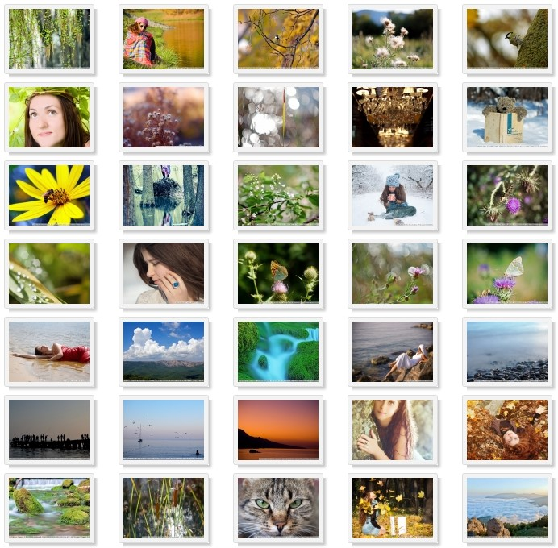
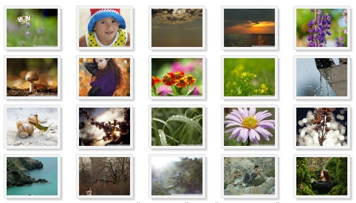

Что и как влияет на фотографию?

Мой рейтинг факторов:
-
Фотограф – главный элемент во время фотосъемки. Если бы не было человека, камера бы не включилась, не установилась в правильном положении возле модели или пейзажа, не сфокусировалась и вообще не сделала снимок. Фотограф управляет всем процессом съемки, он полностью отвечает за процесс съемки, отвечает за результат и никакие отмашки здесь не являются допустимыми. Если кто-то назвался фотографом, он должен суметь фотографировать и получать отличный результат даже на телефон, мыльницу и консервную банку. А это требует куда большего, чем просто взять камеру в руки и нажать кнопку.
Но, конечно же, человек сам не может контролировать все, потому следующим фактором, который влияет на создание фотографии, я назову внешние факторы.
- Внешние факторы, такие как место съемки, настрой участвующих в съемке, тип съемки и время, выделенное на съемку. Приведу пример: когда фотограф снимает свой репортаж, он не может заставить кого-то смотреть именно туда, куда ему нужно, или попросить сделать что-то, он может только ловить моменты, искать удачный ракурс. Также, снимая пейзаж вдруг начинает дождь – фотографу не удастся получить идеально синее небо, но он может получить дождливую картинку. Очень сильно влияет психологический настрой участвующих в съемке. Не всегда можно настроить и расположить к съемки участников или, например, изменить прическу модели. На художественную фотографию очень сильно влияет помощь визажиста, продуманная идея и т.д. Опытный фотограф сумеет выжать с образовавшейся ситуации максимум и никогда не будет винить такое стечении обстоятельств.
-
Свет – элемент и технический и натуральный. Свет – ключ к успеху. Свет – это то, что создает изображение на пленке, или на матрице, или в крайнем случае – дает летний загар. Без света фотографу сложно. Управление светом тоже делает фотограф – он правильно располагает участвующих по направлению солнца, подбирает тени. С технической стороны фотограф пользуется вспышкой, даже днем, отражателями, софтбоксами, системами креативного освещения. Особенно это актуально в студии.
- Помощник фотографа. Я не стал выделять помощника фотографа отдельным пунктом, который влияет на фото, ибо помощника фотографа можно больше отнести к самому фотографу, который организовал фотосъемку, а так как помощник фотографа чаще всего занимается организацией нужного освещения, то помощник является частью системы освещения. В ряде случаев без помощника не обойтись. С помощником можно получить хорошее фото намного быстрей, да и побеседовать всегда найдется с кем :). Обычно серьезная съемка задействует очень много людей, так называемую команду фотографа. Команда фотографа, тоже, очень и очень важна для создания хороших снимков.
- Пост обработка с помощью программного обеспечения (например, с помощью программ Photoshop, Lightroom и т.д). Не секрет, что в наше время поглощающая часть фотографии цифровая, и порой она требует цифровой обработки. От умений фотографа, или другого человека откорректировать кадр с помощью ПО зависит очень много. Все знают, что с мыльницы фото можно «вытянуть» не хуже чем с навороченной зеркалки. Это требует времени, умения и сил.
- Объектив – незаменимый инструмент в руках любого фотографа. Всем известная пословица, что фотограф покупает объектив, а на сдачу камеру. Объектив дает именно ту картинку которые мы видим, он ее создает, искривляет, дополняет, работает с резкостью, ГРИП и другими умными вещами. От скорости его фокусировки и фокусных расстояний, светосилы зависит очень многое. Потому, объектив так важен в фотографии.
- Фотоаппарат. По большому счету, это черный (иногда более гламурного цвета) ящик, со шторками, которые иногда открываются, чтобы подать свет на пленку, матрицу и т.д. При чем раньше пленка и камера тоже были раздельными. Сейчас так много уделяют вниманию камере в силу того, что там стоит матрица вместо пленки, которая имеет ряд характеристик, над которыми работают много ученых, и которые обговаривают еще больше людей. Камера позволяет просто стыковать работу фотографа, объектива, вспышки (света) и сохранить изображение на пленку или карточку памяти.
- Печатающее устройство. От него зависит самый-самый конечный результат всех потуг фотографа. Принтера имеют разное качество печати, цветовые профили, это не маловажный момент.
- Дисплей. Иногда, я бы сказал, очень часто фото не доходит до печати и демонстрируется на дисплее. Само собой, чем качественнее дисплей передает цвета и оттенки – тем лучше будет смотреться фото. По этому поводу написано также миллионы статей.
Такой список мной был составлен для того, чтобы показать, что сама техника, а именно камера и объектив, не являются главными источниками хороших фотографий. Думаю, многие знают и понимают, что хорошие снимки можно сделать и на телефон.
Некоторые полезные выводы:
-
Не всегда нужно гоняться за дорогой профессиональной камерой, даже на самую простенькую камеру со сменной оптикой можно получить чудесные фотографии. Привожу свои примеры с самой примитивной и старой 6-ти мегапиксельной, самой медленной и очень древней зеркалки Nikon D40:
Главным преимуществом камер со сменной оптикой является размер матрицы, и для всех кропнутых камер он практически одинаковый, точно так как и для полнокадровых камер и камер другого типа. Практически можно получать одни и те же фотографии, особенно при работе на низких ISO с камер разного уровня, например с Nikon D40 и D7000, Pentax-k30 и Pentax K10, Canon 350D и Canon 60D. Мои примеры на древнюю Canon 350D:
- Не всегда оправдано гоняться за дорогой светосильной оптикой, даже на китовый объектив можно сделать хорошие снимки.
- Марка фотоаппарата не показывает уровень профессионализма фотографа. Все баталии насчет превосходство Nikon\Canon\Pentax\Sony\Olympus и т.д. только отвлекают от самого процесса создания фотографий. Хорошие фотографии – это не Nikon D5, Canon 1Dx, а умение управляться с ними. Советую вместо проявления любви к своему бренду проявлять любовь к хорошим снимкам.
- Мой опыт работы и обучения людей основам фотографии показывает, что огромное количество полезных функций в современных фотоаппаратах остается не только невостребованным, но и вообще не понятным начинающим фотографам. Потому, в огромном числе случаев не стоит покупать дорогую камеру, а ограничиться более простой. Кстати, для этого производители не зря разделяют модели на любительские, продвинутые, профессиональные, топовые, флагманские и т.д. Новичкам советую начинать с любой самой дешевой зеркальной камеры, в любом случае, если увлечение фотографией будет востребовано, камеру придется менять.
Потому, не важно какой техникой Вы фотографируете, важно как Вы это делаете. Мысль всей статьи такова, что не стоит гонятся за навороченной камерой и объективами, конечно, камера тоже важна в фотографировании, но более важными аспектами являются перечисленные факторы.
Вывод:
Уважайте работу фотографов, и помните, что фотографирует именно человек, а на конечный результат камера влияет чуть ли не в последнюю очередь. Если мы будем считать навороченность камеры единственным мерилом профессионализма фотографа, то все мы попадем в ловушку глупости.